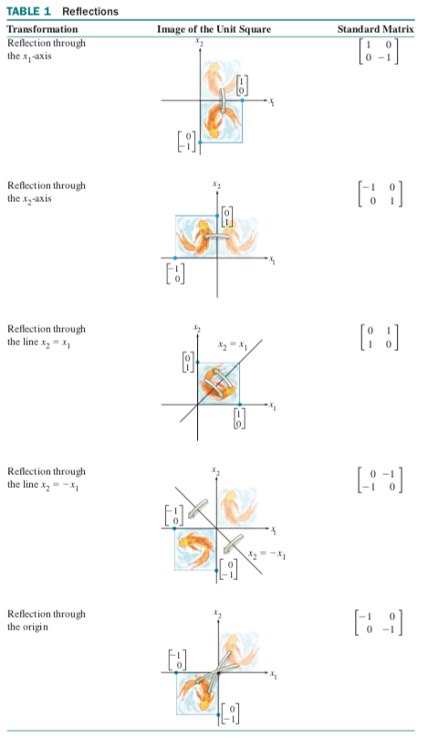
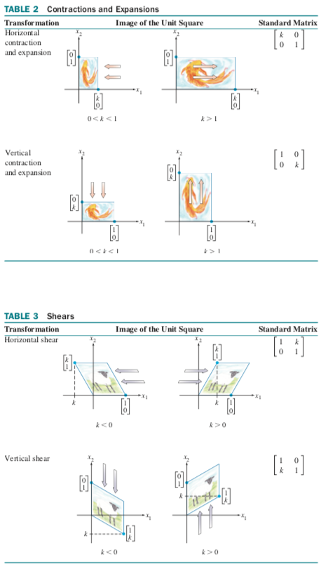
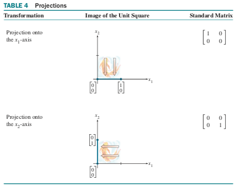

definitions:
-
transformation, function, mapping: rule assigning to each vector in \(\Re^n\) a vector \(T(x)\) in \(\Re^m\)
-
domain: set \(\Re^n\)
-
codomain: set \(\Re^m\)
-
image: vector T(x)
-
range: set of all images T(x)
a projection transformation happens if you go to a lower dimension (e.g. \(x_3\) becomes 0). a shear transformation happens if a 2D square is tilted sideways into a parallelogram.
a transformation T is linear if:
-
\(T(u + v) = T(u) + T(v)\) for all \(u,v \in \text{Domain}(T)\)
-
\(T(cu) = cT(u)\) for all scalars c and all \(u \in \text{Domain}(T)\)
linear transformations preserve operations of vector addition and scalar multiplication.
if T is a linear transformation, then:
-
\(T(0) = 0)\)
-
\(T(cu + dv) = cT(u) + dT(v)\)
-
\(T(c_1 v_2 + \dots + c_p v_p) = c_1 T(v_1) + \dots + c_p T(v_p)\) (superposition principle)
given scalar r, and \(T: \Re^2 \rightarrow \Re^2\) by \(T(x) = rx\)
-
contraction: when \(0 \leq r \leq 1\)
-
dilation: when \(r > 1\)
every linear transformation \(\Re^n \rightarrow \Re^m\) is a matrix transformation \(x \mapsto Ax\).
\(A = [[T(e_1) \dots T(e_n)]\), where \(e_j\) is the jth column of the identity matrix in \(\Re^n\)
geometric linear transformations of \(\Re^2\):
  
types of mappings:
-
\(T: \Re^n \rightarrow \Re^m\) is 'onto' \(\Re^m\) if each b in \(\Re^m\) is the image of at least one x in \(\Re^n\).
-
\(T: \Re^n \rightarrow \Re^m\) is one-to-one if each b in \(\Re^m\) is the image of max one x in \(\Re^n\).
-
so if \(T(x) = 0\) only has the trivial solution
for mapping \(T: \Re^n \rightarrow \Re^m\) and standard matrix \(A\):
-
T maps \(\Re^n\) onto \(\Re^m\) iff columns of matrix span \(\Re^m\)
-
T is one-to-one iff columns of matrix are linearly independent.